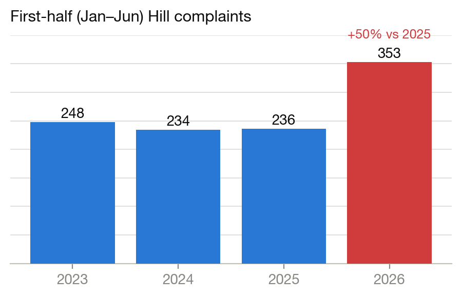
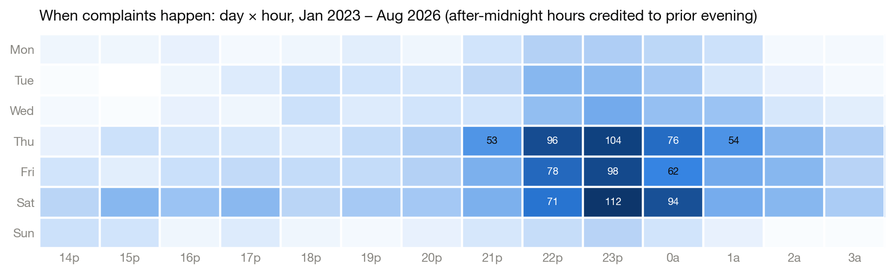

The Reports
We publish a data-driven report series on noise in Boulder’s University Hill neighborhood, built from Boulder Police dispatch records and the City of Boulder open-data portal. Every figure can be independently reproduced; our analysis data available on request.
August 2026 University Hill Noise Report
Complaints hit record levels despite an enforcement surge; tickets doubled but follow only 1 call in 21; the houses named in Report #1 went quiet and new houses took their place. Publishing shortly — we are folding in a pending Boulder Police records request first.
PDF coming with the final releaseOctober 2025 University Hill Noise Report
Three years of data: 37% of the problem from 24 addresses; enforcement failing to deter chronic offenders.
Download the PDF →Key findings at a glance
- Complaints are concentrated: a few dozen addresses of 2,049 in the initial zone of focus drive most of the problem.
- The problem is predictable: 49% of complaints occur Thursday–Saturday, 9 p.m.–2 a.m.
- Consequences work: every house named in our first report saw complaints collapse. Deterrence rotates to whoever is not being watched — which is why the watch list is permanent.
- Enforcement is improving but thin: citations doubled in 2026, yet warnings still outnumber tickets five to one.


Want each report when it publishes? Email yourneighbor@quietenjoymentproject.org and we will add you to the list.